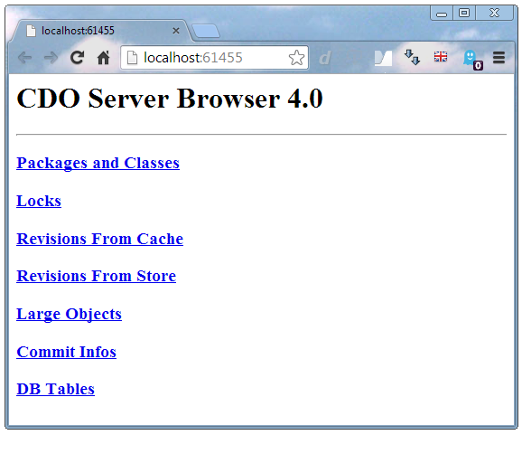
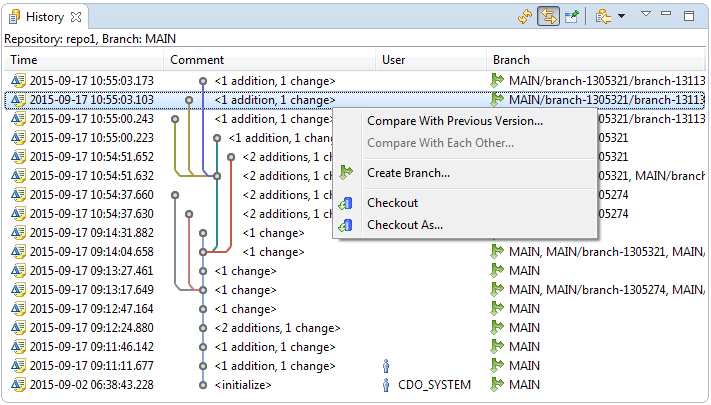

Elements of the User Interface


Elements of the User Interface |
|
The CDO user interface consists of a number of CDO-specific views, editors, and preference pages, as well as some integrations with existing Eclipse views. These user interface elements can be added to and used in any Eclipse perspective, or more comprehensively in the CDO Explorer perspective.
The following sections describe the various user interface elements and explain their purpose.
Table of Contents
The CDO Explorer perspective is a convenient selection of those views and shortcuts that are most commonly used when working with CDO. It has the following default layout:
The CDO Repositories view displays the various repositories and connections that are configured for use in the current workspace. It allows to create new repositories and connections, rename or delete existing ones, manage the branches in them, and finally checking out from them:

In contrast to sessions in the CDO Sessions View repositories and connections configured in the CDO Repositories view are remembered across Eclipse restarts.
See Also:
The CDO Administration view displays configured servers and lists their discovered repositories in real-time. New servers can be added, existing ones can be removed. New repositories can be created in the servers and existing ones can be deleted. If a repository supports security, i.e., authentication and authorization, an editor for the various security concepts, such as users, groups, roles, and permissions can be opened on it:
The CDO Collaboration view displays the other users that are connected to the current repository, more exactly their sessions. When double-clicking a user in this view a dialog pops up asking you for a short message to send to the selected user. The targeted user needs to be subscribed to receiving messages. This view is a very simple example of a custom chat protocol on top of the CDO protocol:
The details of remote message subscriptions and how to contribute custom message handlers is explained
in CDORemoteSessionManager.
The CDO Watch List view is a simple example of change subscriptions. Model objects can be dragged from anywhere
and dropped on the watch list view to create a table entry that shows the latest changes from any user to the
selected model object:
The CDO Time Machine view offers a slider control that can be used to look at models at different historical times. The time slider is only enabled when a model or model object in a historical checkout is selected:

The resource tree in the selected historical checkout as well as the contents of all editors opened on this checkout changes in real-time while the slider control is dragged back and forth in time.
See Also:
The CDO Sessions view provides a rather technical approach to working with the models in repositories and is mostly superseded now by more convenient functionality of the CDO Repositories view and the Project Explorer integration. Nevertheless, it can still be used to open sessions to remote repositories, open model views and transactions on sessions, browse the resource trees of repositories, open model editors on selected resources, and more:

Please note that sessions opened in the CDO Sessions view are not remembered across Eclipse restarts.
The CDO Server Browser allows to introspect the internal data of local repositories or locally replicated repositories of offline checkouts in a web browser:

It is only meant to be used for test and debug purposes. It is not meant to be a production tool that would scale to arbitrary repository sizes!
CDO provides an Eclipse Import wizard to create checkouts from repositories without opening the CDO Repositories View:
See Also:
The CDO model editor is a generic editor for the model resources in a repository. It displays the contents of the resource in an editable, structured tree and allows to modify the tree structure of the resource via the New Child, New Sibling, or Delete context menu actions. Model elements can be moved or copied using drag and drop. Their attributes and references can be edited in the Properties view.
The CDO model editor is a generated EMF editor with some additional features such as real-time locking decoration and early conflict detection:

Whether the CDO model editor actually supports editing the displayed model depends on whether the checkout of the model is transactional or not.
As of CDO 4.4 the preferred way to work with models in or from repositories is the Project Explorer integration. This integration is centered around the concept of a checkout. Checkouts can be created in the CDO Repositories View or in the Project Explorer view with the CDO Checkout wizard. Once created, checkouts are displayed in the Project Explorer like workspace projects and decorated with a small blue repository image. In contrast to workspace projects the displayed checkouts have no physical representation in the workspace.
The folders, resources, and model elements of the checked-out repository are displayed under the checkout and can be modified directly via drag and drop to move or copy them, or via double-click to open the CDO model editor on a resource or an EMF Forms dialog on a model element:

The context menu offers various functions for checkouts, such as renaming, closing, or deleting them, showing them in different views, switching them to different branches or branch points, comparing them with different branches or branch points, and merging from different branches or branch points.
In contrast to sessions in the CDO Sessions View checkouts created in the Project Explorer view are remembered across Eclipse restarts.
See Also:
CDO integrates with Eclipse's Properties view and provides various semantic and technical information about the element selected in the current perspective:

For model elements selected in editors of transactional checkouts the property sheet integration supports the modification of the element's attribute and reference values.
CDO integrates with Eclipse's History view and displays the commit tree of the selected repository, branch, checkout, or model element:

If the History view does not react to selection changes activate the "Link with Editor and Selection" button in the History view's toolbar.
The commit tree is updated in real-time when local transactions are committed but also when other users commit their changes from other workstations.
If the repository that the current commit tree is based upon supports branching (see Working with Branches) new branches can be forked off of the selected commit directly in the History view.
New checkouts can also be created directly from the selected commit by opening the context menu and selecting the Checkout action or the Checkout As action. See CDO Checkout Wizard or Checking Out from Repositories for details about the checkout process.
CDO integrates with EMF Compare to provide efficient and scalable compare editors. Different branches or different branch points can be compared with each other:
CDO also provides efficient and scalable merge editors. Different branches or different branch points can be merged from each other:

Comparisons and merges are started either from the History view, from the context menus of checkouts, or by dragging and dropping branches, branch points, or checkouts onto other checkouts in the Project Explorer while pressing the Shift key (for comparisons) or the Ctrl key (for merges).
See Also:
CDO integrates with EMF Forms to provide generic editing dialogs for the model element that are displayed in the Project Explorer:

See Also:
The only setting that can currently be adjusted on the CDO Explorer preference page is the number of minutes to keep a repository connected after it has been used the last time: